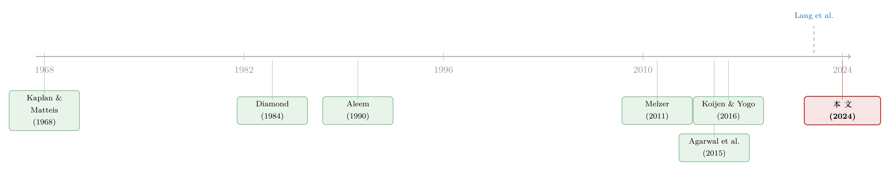

放高利贷的也怕「成本上升」：一个关于地下钱庄的结构模型
本文读的是 Leong, Li, Pavanini & Walsh (2024, Journal of Financial Economics)：作者用新加坡 1,090 名借款人、11,032 笔向「放数」（loan shark）借的贷款，估计了一个地下高利贷市场的结构模型，并用它来回答一个几乎无法用实验回答的问题——各种打击政策，到底打到了谁？核心结论是：2014 年的执法严打让放贷量下降 48.6%、放贷者利润下降 67.7%，但借款人福利只下降 12.4%；而真正能精准削掉放贷者利润的，是把「中间档」的借款人移出市场，或者干脆让人少赌一点。
1 一个几乎没人能拿到数据的市场
先抛一个让人不太舒服的事实：非法高利贷（illegal money lending, IML）——也就是我们俗称的「放高利贷」「放数」「loansharking」——并不是一个边缘到可以忽略的现象。2004 年英国约有 1% 的家庭欠着非法放贷者的钱；2009 年意大利的放数生意给有组织犯罪带来了 €15bn 的利润，相当于该国 GDP 的 1%；1990 年美国的放数收益估计在 $14bn 上下。这门生意古老到《汉谟拉比法典》里就已经在禁止收取过高利息了。
可问题在于：你几乎拿不到任何可靠的、交易层面的数据。原因不难想——放贷者是跨国犯罪集团的一部分，常年在执法的雷达之下活动；而借款人是一群极其脆弱的人，他们既怕举报放数佬带来的报复，又羞于承认自己的财务困境。于是研究者面对的是一个巨大的张力：这个市场对社会的危害人人皆知，政策干预年年都在做，但没有人真正量化过这些干预的效果，也没人说清驱动借贷双方的激励到底是什么。
这篇论文做的，就是把这个「黑箱」撬开。
2 数据：48 个「上过道」的访员
接着，一个自然的问题是：他们是怎么拿到数据的？
答案本身就值得讲。作者在新加坡雇了 48 名调查访员，而这些访员本人就曾经在无牌借贷市场里混过——他们熟悉这个圈子的门道，更关键的是，他们可以把自己当年借放数、被催收的经历讲给受访者听，从而让对方卸下防备、愿意开口。访员先到借款人常出没的地点，打听他们都向哪些放贷者借钱，由此估计出当时约 90% 活跃放贷者的位置和营业时间；再据此随机抽取时间和地点去蹲守、接触借款人。
这套做法的好处是随机化：在随机的时间、随机的地点接触到的借款人，能很大程度上排除样本选择问题。最终的初始接受率高达 91.1%。访谈在受访者自选的咖啡馆进行，每次 1–2 小时，受访者拿到 S$20–40 的报酬；为了降低回忆误差，作者还出钱让借款人提供交易的实物证据——日记、还款日程笔记、放贷者发来的短信、ATM 取款记录。
最终样本：1,090 名借款人在 2009–2016 年间借的 11,032 笔贷款。每一笔，作者都能看到借款人想借的金额、放贷者最终给的金额、利率、错过的还款次数、罚金，以及放贷者用了哪些催收手段。这是同类数据中目前已知最大的一份。
这里要特别提一个细节：大多数信贷数据集只记录「最终批了多少」，而这份数据同时有「借款人想借多少」和「放贷者给了多少」。这个区别后面会变得非常重要——它让作者可以把一项政策对信贷「需求量」和「供给量」的影响分开来量化。
3 这个市场长什么样：卡特尔、贷款重置与催收
然后，要理解后面的模型，得先理解这个市场的几个独有特征。作者通过访谈新加坡（4 名）、马来西亚（2 名）、中国（13 名）的前放数佬，拼出了它的结构。
第一，它是个卡特尔，不是竞争市场。 整个中国与东南亚的放数市场，由平均约 10 个总部设在中国的跨国犯罪辛迪加组成的卡特尔控制。辛迪加给每个放贷者约 S$50,000（US$36,500）的启动资金去放贷，并统一规定贷款结构和利率。数据印证了这一点：不同辛迪加的放贷者，贷款结构完全一样，同一时间几乎所有贷款利率都相同。这意味着政策制定者无法「监管」它，只能「铲除」它。
第二，催收靠的是非法骚扰（harassment）。 因为没有合法的追债渠道，放数佬用严厉而违法的手段逼还款。
第三，也是最精巧的一环——贷款重置（loan reset）。 一笔贷款要还 6 个星期，每周还一次。一旦借款人某周漏还，贷款就「重置」，并产生一笔财务罚金——而这笔罚金，恰恰是放贷者利润的主要来源。数据里只有 14.6% 的贷款在 6 周内按时还清，但 97.5% 最终都还上了；中位数要拖到 12 周才还完。换句话说，这套结构的设计目的，就是让你漏还、然后罚你，把你困在债务里。
这就埋下了一个反直觉的种子：对放贷者最赚钱的借款人，既不是那些规规矩矩按时还的，也不是那些彻底还不上的，而是会漏几次、但最终还得起的人。前者交不出罚金，后者要耗费大量催收成本。这个「中间最肥」的直觉，是全文的灵魂。
4 模型：放贷者在「贷多少」和「催多狠」之间权衡
但真正关键的一步在于：光有描述性事实还不够，你无法用它来模拟「如果当年没严打会怎样」。所以作者写了一个结构模型（structural model）。
模型的时间线是这样的：
- 借款人带着一个想借的金额去找放贷者，并在异质于「催收狠度」的放贷者中选一个。
- 放贷者根据对借款人还款能力的估计（取决于其特征和过往表现），决定给多大的贷款
L，以及催收狠度h——即漏还之后骚扰借款人的概率。 - 还款能力本身又会被催收的威胁所影响：催得越狠，还款能力越高。
放贷者于是面对一个清清楚楚的权衡：贷得越多，利息收入越高，但借款人越难还；催得越狠，还款能力越高，但成本越大。 用一个示意性的利润函数来抓住这层逻辑（符号为示意，旨在呈现机制而非照搬论文记号）：
直觉上，放贷者在调 L 和 h 这两个旋钮：a1、a2 是收入侧（大贷款赚利息、漏还赚罚金），a3、a4 是成本侧（催收要花钱、违约要亏本）。对「中间档」借款人，a2 大而 a4、a3 都不太大——所以他们最肥。
借款人这一侧，则有两个关键的行为特征：他们表现出准双曲贴现（quasi-hyperbolic discounting）——也就是「现在偏误」（present bias），以及较低的风险厌恶，并且从被骚扰中获得负效用。把准双曲贴现写出来，借款人的（示意性）跨期效用是：
$$ U_i \;=\; u_0 \;+\; \beta \sum_{t=1}^{T} \delta^{\,t}\, u_t $$
这里 β 衡量「现在偏误」的强度：β < 1 意味着一个人会过度看重当下的快感（比如一笔能立刻拿去赌的钱），而过度贴现未来要承受的还款痛苦与骚扰。这正是为什么这个市场能存在——它专门服务那些被现在偏误推着、又被所有正规渠道（包括发薪日贷款和 P2P 平台）拒之门外的人。样本里所有人都声称自己无法从正规部门借到钱。
把放贷者的优化、借款人的选择放在一起求解，作者就用观测到的贷款结果把模型的参数估计出来，然后——这才是结构模型的全部意义——拿它去做各种「反事实（counterfactual）」。
5 主要结果：严打打疼了谁
于是反转出现了。来看三组反事实。
第一组：2014 年的严打。 2014 年新加坡当局加大了打击力度，大量放贷者退出市场（往往是被捕）。这抬高了放贷成本，于是利率被卡特尔上调——隐含年化利率（APR）从 261% 飙到 562%。作者用模型模拟「若没有严打会如何」，得到：
- 放贷量下降
48.6%； - 放贷者利润下降
67.7%； - 借款人剩余下降
12.4%。
注意这个不对称：严打把放贷者利润砍掉了三分之二，而借款人福利只掉了八分之一。更妙的是分解：如果不让利率上涨，光是催收成本的上升就会让放贷者几乎只能保本——这就解释了卡特尔为什么要在严打后涨价。作者还做了一个利率优化的反事实，发现一个微妙的结论：严打之前，卡特尔其实把利率定低了，本可以靠涨价赚更多；而严打之后，数据里观测到的那个高利率，恰恰就是利润最大化的利率。为什么严打前要「克制」？作者的解读是三个动机：避免某个辛迪加偏离合谋、阻止新辛迪加进入、以及不要太招惹执法的注意。
第二组：把哪一档借款人移出市场最有效？ 作者把借款人按还款能力分成 20 个等需求的组，逐组移除（现实中可通过戒赌/教育让他们不再借，或放松利率上限给他们一个正规替代）。结果正如前面埋的伏笔：移除「中间档」借款人，对放贷者利润的打击最大。还款能力最高的人，催收成本小但罚金也少；还款能力最低的人罚金多，但要耗费大量催收成本，所以放贷者只肯给他们小额贷款。中间的人最肥。
这恰好和 Agarwal et al. (2015) 在信用卡市场的发现相反——他们发现 FICO 分数最低的那一档消费者最赚钱。差别来自哪里？来自 IML 里最高风险那一段借款人的高昂监测与催收成本。
第三组：间接干预。 减少赌博、毒品，或通过提升金融素养来降低「现在偏误」，都能间接削掉放贷者利润——主要是通过压低贷款需求。对中位借款人，让他不再赌博，会让他所选放贷者的利润下降 26%。有意思的是，戒赌的人还款能力更高、服务成本更低，但他们要借的钱也更少，于是利润反而被压下去了。
6 文献脉络
把视角拉远。这篇论文站在哪儿？
最早的源头，是 Kaplan and Matteis (1968) 那篇直接叫《放高利贷的经济学》的文章，第一次把放数当成一个经济现象来谈。沿着「非法市场经济学」这条线，后来的研究——无论理论（Becker 等）还是实证——几乎清一色地集中在毒品市场上；同一批作者自己也做过 Leong et al. (2022)，用一个帮派的账本研究毒品定价。把「融资摩擦」与非法活动连起来的尝试（如 Limodio (2022) 研究恐怖主义融资）也有，但没有一篇能直接拿到非法贷款合同。

另一条线是「掠夺性借贷」。在合法市场里，最接近 IML 的是发薪日贷款（payday loans）——Stegman (2007)、Morse (2011)、Melzer (2011, 2018) 等。Melzer (2011) 发现美国某些州有发薪日贷款并不能缓解借款人的经济困境；而本文提供了一个互补的角度：没有发薪日贷款的地方，可能恰恰由 IML 来填补。还有一条是金融中介里的「监测」理论，从 Diamond (1984) 一路下来——本文把放数佬的「催收」类比为监测，并首次为高风险消费信贷里的监测提供了实证。
最后，本文属于「用结构模型量化信贷市场政策」这一蓬勃发展的领域。近年这类均衡框架被用到商业贷款、按揭、消费信贷、信用卡、保险（如 Koijen and Yogo (2016)）等等，本文则给出了第一个放数市场的结构模型。在结构式地刻画信贷市场竞争与福利这件事上，它与本博客此前介绍过的几项工作同气连枝（可参见《监督做得更差，却照样抢走你的客户》、《数据让定价更准，谁的钱包先变薄？》）。
还要特别说明它与 Lang et al. (2022) 的关系：那是作者们的「姊妹篇」，用的是同一份数据，贡献在于描述数据采集、给出描述性事实、并用简约式（reduced-form）总结了严打对贷款结果的影响。本文则加采了对借款人和（前）放贷者的额外问卷，并在此之上搭起并结构化估计了一个均衡模型，从而能做出 Lang et al. (2022) 做不到的反事实。
7 评论与延伸（Q&A + 研究方向）
(a) 几个可能的疑问
Q：「中间档借款人最肥」这个结论，是模型的产物还是数据里真实的？
它既来自数据里的硬事实（
14.6%按时还、97.5%最终还上，罚金是利润主源），也依赖模型把「还款概率随 L、h 变化」的弹性估出来。前者保证方向，后者给出量级。它与信用卡市场 Agarwal et al. (2015) 的「底部最肥」相反，差别在 IML 最高风险段的催收成本极高——这是个可证伪、且被作者明确归因的机制。
Q：严打让利率从 261% 涨到 562%，这是不是说明严打「帮倒忙」、反而害了借款人？
不能这么简单下结论。借款人剩余只下降
12.4%，而放贷量下降48.6%、放贷者利润下降67.7%。也就是说，严打主要是在「铲除这个市场」——这正是作者强调的政策首要目标。它把放贷者打到几乎只能保本，迫使卡特尔涨价自救；价格涨了，但市场规模和犯罪利润被大幅压缩。
Q：为什么严打前卡特尔反而「不舍得」把利率定到最优？
因为定价不只看当期利润。作者给的三个动机是：防止某个辛迪加偏离合谋、阻止新辛迪加进入、避免过度招惹执法。严打之后这些约束变了——催收成本陡增，观测到的高利率就变成了利润最大化的选择。
Q：「准双曲贴现」在这里到底起什么作用？
它是这个市场存在的微观基础。
β < 1的现在偏误，让借款人过度看重「立刻拿到一笔能去赌的钱」，而过度贴现未来的还款痛苦和骚扰。这也解释了为什么「降低时间贴现（提升金融素养）」是有效的间接干预——它直接削掉了需求。
Q：放松利率上限（usury cap）真能削弱犯罪组织吗？
模型里是的：给借款人一个合法的正规替代，等于把他们从 IML 移出去，从而打击放贷者利润。这给「利率上限」之争提供了一个新角度——上限并非总是保护弱者，它也可能把风险借款人推向非法市场。
Q：样本会不会有选择偏差，毕竟是靠前放贷者访员去蹲守接触的？
这是最该担心的点。作者的辩护是：覆盖了约
90%活跃放贷者、在随机时间地点接触、初始接受率91.1%、且样本里没有「一次性借款人」。这些都缓解但不能完全消除担忧——见下面我的判断。
(b) 几个可能的研究问题与提案
1. IML 与正规信用供给的「跷跷板」
【经济故事】Melzer (2011) 暗示发薪日贷款的缺位可能被 IML 填补。如果某地区收紧了发薪日贷款或正规小额信贷，地下高利贷的需求是否会上升？这是利率上限之争的核心。 【可行性】中。需要 IML 活动的代理指标（报警记录、催收相关犯罪），与正规信贷监管变动做双重差分；难点在 IML 本身不可观测，只能用犯罪数据近似。
2. 把「催收即监测」搬到正规高风险消费信贷
【经济故事】本文把放数佬的催收类比为 Diamond (1984) 式监测，并发现它对高风险段至关重要。正规的发薪日/次级贷款里，催收强度（电话、上门）是否也呈现「中间档最优」的非单调结构？ 【可行性】中高。美国有 FDCPA 下的催收投诉数据与债务催收公司微观数据，可与借款人风险分层匹配；识别可借助各州催收法的差异（呼应 Romeo and Sandler (2021)、Fonseca (2023)）。
3. 跨国卡特尔的合谋利率：执法冲击作为「去合谋」实验
【经济故事】本文发现严打前卡特尔「克制」定价以维持合谋与阻止进入。一次外生的执法冲击，是否会改变合谋的稳定性、进而改变定价？这是把产业组织的合谋理论用到犯罪市场。 【可行性】低到中。需要多地区、多时点的执法冲击与利率数据；IML 价格数据极稀缺（本文也因价格变动太小而无法对辛迪加定价直接建模），可行性受限。
4. 现在偏误的「可塑性」：金融素养干预的随机实验
【经济故事】本文显示降低时间贴现能显著削减放贷者利润。但「现在偏误」能否被一次性的金融教育真正降下来、且持续？这关系到第三类政策的成色。 【可行性】高。可在高风险人群中做金融素养 RCT，测
β的变化与后续非法/高息借贷行为（与本博客介绍过的《一门高中理财课，能让金融犯罪少三成？》思路相通）。
5. 信用市场的「需求 vs 供给量」分离用于公司债/外资场景
【经济故事】本文最被低估的方法论贡献，是同时观测「想借」与「给了」。在公司债或外资持有人场景中，若能分离「机构想买的量」与「实际成交量」，就能把一项冲击对需求弹性与供给约束的影响拆开。 【可行性】中。需要交易商报价/询价层面的数据（想买 vs 成交），在公司债大宗交易里相对可得；识别可借助流动性冲击或监管事件。
8 我的判断与参考文献
贡献。 这篇论文最了不起的地方，不在模型多花哨，而在它把一个几乎不可能拿到数据的市场变成了可以做反事实的对象。「先有一份别人拿不到的数据，再在其上搭一个能回答政策问题的结构模型」——这是实证产业组织最好的范式之一。而「中间档借款人最肥」「严打主要打利润、少伤福利」「戒赌让放贷者利润掉 26%」这几个结论，都既反直觉又有清楚的机制，经得起追问。
对识别的担忧。 最大的软肋有两个。其一是样本代表性：尽管随机化做得很认真、接受率很高，但样本终究是「能被前放贷者访员在街头接触到、且愿意领 S$20–40 受访」的借款人，最隐蔽或最高端的那部分 IML 未必在内。其二是利率几乎没有变异：卡特尔统一定价让作者无法直接对辛迪加的定价行为建模，只能做「改变共同利率」的反事实，这让关于「最优合谋利率」的那部分结论更像是模型外推，而非数据识别。所有反事实都是结构模型的产物，其可信度上限就是模型设定的可信度。
后续想看到什么。 我最想看到的是外部效度的检验：既然作者反复强调新加坡的市场结构与整个东南亚/中国（合计逾 20 亿人口）相似，那么能否找到另一地区的一次执法冲击，用本文估出的参数去样本外预测它对放贷量和利润的冲击？哪怕只是一个粗糙的对照，也能极大地增强「这套模型抓住了真机制」的说服力。
参考文献
- Agarwal, S., Chomsisengphet, S., Mahoney, N., Stroebel, J. (2015). Regulating consumer financial products: Evidence from credit cards. Quarterly Journal of Economics 130(1), 111–164.
- Aleem, I. (1990). Imperfect information, screening, and the costs of informal lending: A study of a rural credit market in Pakistan. World Bank Economic Review 4(3), 329–349.
- Diamond, D. (1984). Financial intermediation and delegated monitoring. Review of Economic Studies 51(3), 393–414.
- Kaplan, L.J., Matteis, S. (1968). The economics of loansharking. American Journal of Economics and Sociology 27(3), 239–252.
- Koijen, R.S.J., Yogo, M. (2016). Shadow insurance. Econometrica 84(3), 1265–1287.
- Lang, K., Leong, K., Li, H., Xu, H. (2022). Borrowing in an illegal market: Contracting with loan sharks. Review of Economics and Statistics.
- Leong, K., Li, H., Pavanini, N., Walsh, C. (2024). The effects of policy interventions to limit illegal money lending. Journal of Financial Economics 159, 103894.
- Leong, K., Li, H., Rysman, M., Walsh, C. (2022). Law enforcement and bargaining over illicit drug prices: Structural evidence from a gang's ledger. Journal of the European Economic Association 20(3), 1198–1230.
- Limodio, N. (2022). Terrorism financing, recruitment, and attacks. Econometrica 90(4), 1711–1742.
- Melzer, B. (2011). The real costs of credit access: Evidence from the payday lending market. Quarterly Journal of Economics 126(1), 517–555.
- Morse, A. (2011). Payday lenders: Heroes or villains? Journal of Financial Economics 102, 28–44.